import pandas as pd
exam = pd.read_csv('exam.csv')
examDo it! 쉽게 배우는 파이썬 데이터 분석
06 자유자재로 데이터 가공하기
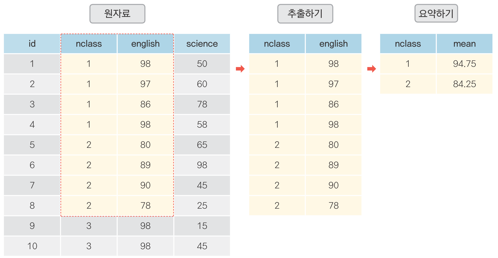
목차
06-1 데이터 전처리 - 원하는 형태로 데이터 가공하기(link)
06-2 조건에 맞는 데이터만 추출하기(link)
06-3 필요한 변수만 추출하기(link)
06-4 순서대로 정렬하기(link)
06-5 파생변수 추가하기(link)
06-6 집단별로 요약하기(link)
06-7 데이터 합치기(link)
06-1 데이터 전처리
- 원하는 형태로 데이터 가공하기
데이터 전처리(data preprocessing)
- 분석에 적합하게 데이터를 가공하는 작업
pandas: 전처리 작업에 가장 많이 사용되는 패키지
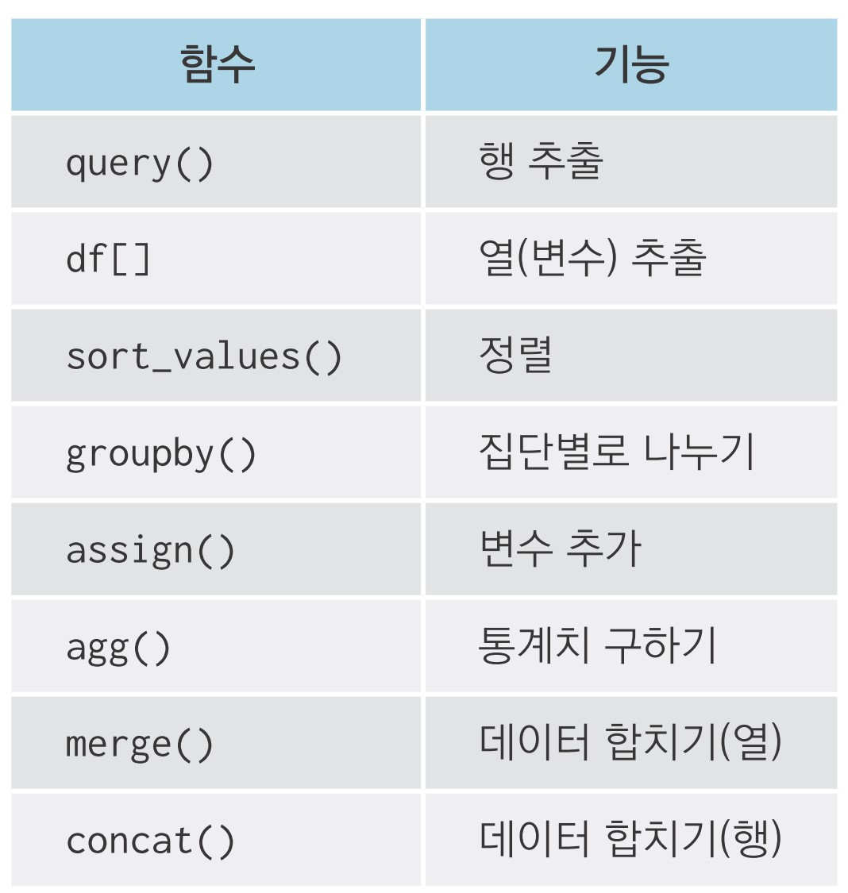
06-2 조건에 맞는 데이터만 추출하기
조건에 맞는 데이터만 추출하기: df.query()
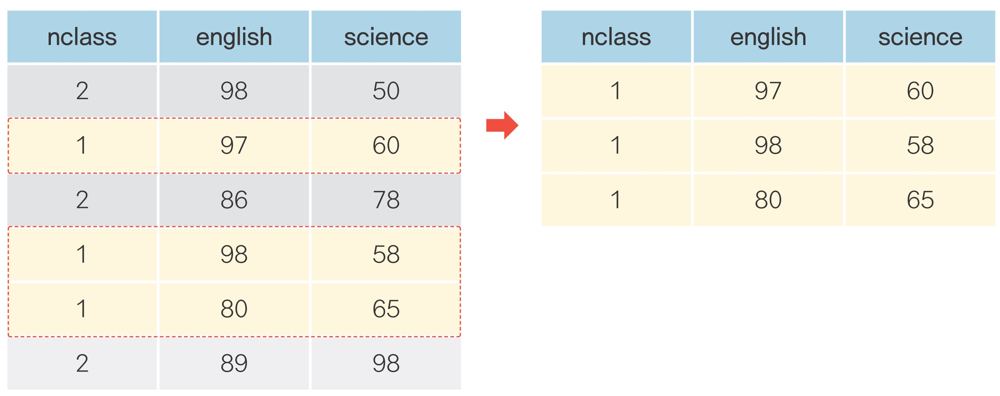
데이터 불러오기
id nclass math english science
0 1 1 50 98 50
1 2 1 60 97 60
2 3 1 45 86 78
3 4 1 30 98 58
4 5 2 25 80 65
5 6 2 50 89 98
6 7 2 80 90 45
7 8 2 90 78 25
8 9 3 20 98 15
9 10 3 50 98 45
10 11 3 65 65 65
11 12 3 45 85 32
12 13 4 46 98 65
13 14 4 48 87 12
14 15 4 75 56 78
15 16 4 58 98 65
16 17 5 65 68 98
17 18 5 80 78 90
18 19 5 89 68 87
19 20 5 78 83 58 id nclass math english science
0 1 1 50 98 50
1 2 1 60 97 60
2 3 1 45 86 78
3 4 1 30 98 58 id nclass math english science
4 5 2 25 80 65
5 6 2 50 89 98
6 7 2 80 90 45
7 8 2 90 78 25
8 9 3 20 98 15
9 10 3 50 98 45
10 11 3 65 65 65
11 12 3 45 85 32
12 13 4 46 98 65
13 14 4 48 87 12
14 15 4 75 56 78
15 16 4 58 98 65
16 17 5 65 68 98
17 18 5 80 78 90
18 19 5 89 68 87
19 20 5 78 83 58 id nclass math english science
0 1 1 50 98 50
1 2 1 60 97 60
2 3 1 45 86 78
3 4 1 30 98 58
4 5 2 25 80 65
5 6 2 50 89 98
6 7 2 80 90 45
7 8 2 90 78 25
12 13 4 46 98 65
13 14 4 48 87 12
14 15 4 75 56 78
15 16 4 58 98 65
16 17 5 65 68 98
17 18 5 80 78 90
18 19 5 89 68 87
19 20 5 78 83 58초과, 미만, 이상, 이하 조건 걸기
id nclass math english science
0 1 1 50 98 50
1 2 1 60 97 60
2 3 1 45 86 78
3 4 1 30 98 58
4 5 2 25 80 65
5 6 2 50 89 98
6 7 2 80 90 45
7 8 2 90 78 25
8 9 3 20 98 15
9 10 3 50 98 45
10 11 3 65 65 65
11 12 3 45 85 32
12 13 4 46 98 65
13 14 4 48 87 12
14 15 4 75 56 78
15 16 4 58 98 65
16 17 5 65 68 98
17 18 5 80 78 90
18 19 5 89 68 87
19 20 5 78 83 58여러 조건을 충족하는 행 추출하기
id nclass math english science
0 1 1 50 98 50
1 2 1 60 97 60여러 조건 중 하나 이상 충족하는 행 추출하기
id nclass math english science
2 3 1 45 86 78
4 5 2 25 80 65
5 6 2 50 89 98
6 7 2 80 90 45
7 8 2 90 78 25
8 9 3 20 98 15
9 10 3 50 98 45
10 11 3 65 65 65
11 12 3 45 85 32
13 14 4 48 87 12
14 15 4 75 56 78
16 17 5 65 68 98
17 18 5 80 78 90
18 19 5 89 68 87
19 20 5 78 83 58목록에 해당하는 행 추출하기
목록에 해당하는 행 추출하기
추출한 행으로 데이터 만들기
문자 변수를 이용해 조건에 맞는 행 추출하기
‘전체 조건’ 과 ‘추출할 문자’ 에 서로 다른 모양 따옴표 입력
파이썬에서 사용하는 기호
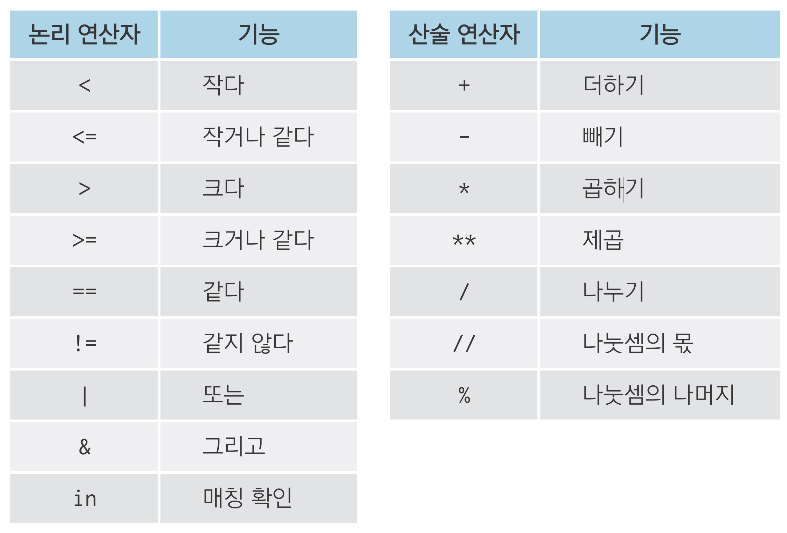
데이터 프레임 출력 제한 설정하기
데이터 프레임 크면 중간 생략함
- 60행 넘기면 위아래 5행씩 10행만 출력
- 20열 넘기면 좌우 10열씩 20열만 출력
행, 열 제한 없이 모두 출력하기
- JupyterLab이나 커널(Kernel)을 새로 실행하면 원래대로 돌아감
- 커널 새로 실행: JupyterLab 상단 메뉴 [Kernel → Restart Kernel…] 클릭
새로 실행하지 않고 설정 되돌리기
혼자서 해보기
mpg 데이터를 이용해 분석 문제를 해결해 보세요.
Q1. 자동차 배기량에 따라 고속도로 연비가 다른지 알아보려고 합니다. displ(배기량)이 4 이하인
자동차와 5 이상인 자동차 중 어떤 자동차의 hwy(고속도로 연비) 평균이 더 높은지 알아보세요.
Q2. 자동차 제조 회사에 따라 도시 연비가 어떻게 다른지 알아보려고 합니다. 'audi'와 'toyota'
중 어느 manufacturer(자동차 제조 회사)의 cty(도시 연비) 평균이 더 높은지 알아보세요.
Q3. 'chevrolet', 'ford', 'honda' 자동차의 고속도로 연비 평균을 알아보려고 합니다.
세 회사의 데이터를 추출한 다음 hwy 전체 평균을 구해 보세요.
Q1. 자동차 배기량에 따라 고속도로 연비가 다른지 알아보려고 합니다. displ(배기량)이 4 이하인
자동차와 5 이상인 자동차 중 어떤 자동차의 hwy(고속도로 연비) 평균이 더 높은지 알아보세요.
Q2. 자동차 제조 회사에 따라 도시 연비가 어떻게 다른지 알아보려고 합니다. 'audi'와 'toyota'
중 어느 manufacturer(자동차 제조 회사)의 cty(도시 연비) 평균이 더 높은지 알아보세요.
Q3. 'chevrolet', 'ford', 'honda' 자동차의 고속도로 연비 평균을 알아보려고 합니다.
세 회사의 데이터를 추출한 다음 hwy 전체 평균을 구해 보세요.
06-3 필요한 변수만 추출하기
변수 추출하기: df[]
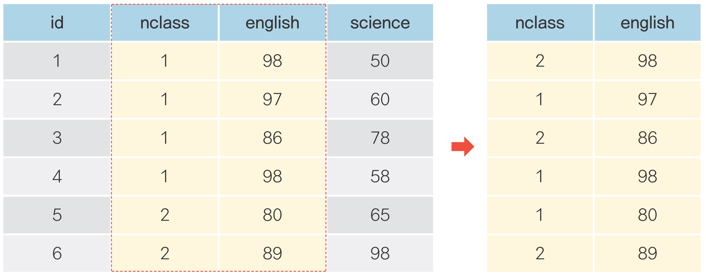
변수 추출하기
여러 변수 추출하기
변수 제거하기
id nclass english science
0 1 1 98 50
1 2 1 97 60
2 3 1 86 78
3 4 1 98 58
4 5 2 80 65
5 6 2 89 98
6 7 2 90 45
7 8 2 78 25
8 9 3 98 15
9 10 3 98 45
10 11 3 65 65
11 12 3 85 32
12 13 4 98 65
13 14 4 87 12
14 15 4 56 78
15 16 4 98 65
16 17 5 68 98
17 18 5 78 90
18 19 5 68 87
19 20 5 83 58pandas 함수 조합하기
query()와 [] 조합하기
1반 학생의 영어 점수 추출
수학 점수가 50점 이상인 학생의 id와 math 변수 추출
일부만 출력하기
일부만 출력하기
가독성 있게 코드 줄 바꾸기
- 명령어 끝난 부분 뒤에 백슬래시(
\) 입력 후 [Enter]로 줄바꿈
- 명령어 끝난 부분 뒤에 백슬래시(
- [Spacebar]나 [Tab]을 이용해 간격 띄우고 다음 명령어 입력
\뒤에 아무것도 입력하면 안 됨(주석, 띄어쓰기 X)
혼자서 해보기
mpg 데이터를 이용해 분석 문제를 해결해 보세요.
Q1. mpg 데이터는 11개 변수로 구성됩니다. 이 중 일부만 추출해 분석에 활용하려고 합니다.
mpg 데이터에서 category(자동차 종류), cty(도시 연비) 변수를 추출해 새로운 데이터를
만드세요. 새로 만든 데이터의 일부를 출력해 두 변수로만 구성되어 있는지 확인하세요.
Q2. 자동차 종류에 따라 도시 연비가 어떻게 다른지 알아보려고 합니다. 앞에서 추출한 데이터를
이용해 category(자동차 종류)가 'suv'인 자동차와 'compact'인 자동차 중 어떤 자동차의
cty(도시 연비) 평균이 더 높은지 알아보세요.
Q1. mpg 데이터는 11개 변수로 구성됩니다. 이 중 일부만 추출해 분석에 활용하려고 합니다.
mpg 데이터에서 category(자동차 종류), cty(도시 연비) 변수를 추출해 새로운 데이터를
만드세요. 새로 만든 데이터의 일부를 출력해 두 변수로만 구성되어 있는지 확인하세요.
category cty
0 compact 18
1 compact 21
2 compact 20
3 compact 21
4 compact 16Q2. 자동차 종류에 따라 도시 연비가 어떻게 다른지 알아보려고 합니다. 앞에서 추출한 데이터를
이용해 category(자동차 종류)가 'suv'인 자동차와 'compact'인 자동차 중 어떤 자동차의
cty(도시 연비) 평균이 더 높은지 알아보세요.
06-4 순서대로 정렬하기
순서대로 정렬하기: df.sort_values()
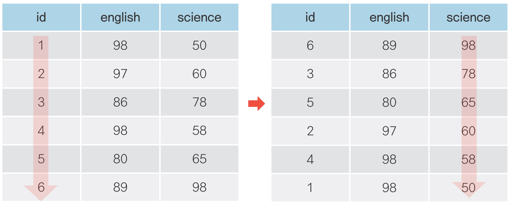
오름차순으로 정렬하기
id nclass math english science
8 9 3 20 98 15
4 5 2 25 80 65
3 4 1 30 98 58
2 3 1 45 86 78
11 12 3 45 85 32
12 13 4 46 98 65
13 14 4 48 87 12
0 1 1 50 98 50
9 10 3 50 98 45
5 6 2 50 89 98
15 16 4 58 98 65
1 2 1 60 97 60
10 11 3 65 65 65
16 17 5 65 68 98
14 15 4 75 56 78
19 20 5 78 83 58
6 7 2 80 90 45
17 18 5 80 78 90
18 19 5 89 68 87
7 8 2 90 78 25내림차순으로 정렬하기
id nclass math english science
7 8 2 90 78 25
18 19 5 89 68 87
17 18 5 80 78 90
6 7 2 80 90 45
19 20 5 78 83 58
14 15 4 75 56 78
16 17 5 65 68 98
10 11 3 65 65 65
1 2 1 60 97 60
15 16 4 58 98 65
9 10 3 50 98 45
5 6 2 50 89 98
0 1 1 50 98 50
13 14 4 48 87 12
12 13 4 46 98 65
11 12 3 45 85 32
2 3 1 45 86 78
3 4 1 30 98 58
4 5 2 25 80 65
8 9 3 20 98 15여러 정렬 기준 적용하기
id nclass math english science
3 4 1 30 98 58
2 3 1 45 86 78
0 1 1 50 98 50
1 2 1 60 97 60
4 5 2 25 80 65
5 6 2 50 89 98
6 7 2 80 90 45
7 8 2 90 78 25
8 9 3 20 98 15
11 12 3 45 85 32
9 10 3 50 98 45
10 11 3 65 65 65
12 13 4 46 98 65
13 14 4 48 87 12
15 16 4 58 98 65
14 15 4 75 56 78
16 17 5 65 68 98
19 20 5 78 83 58
17 18 5 80 78 90
18 19 5 89 68 87변수별로 정렬 순서를 다르게 지정하기
id nclass math english science
1 2 1 60 97 60
0 1 1 50 98 50
2 3 1 45 86 78
3 4 1 30 98 58
7 8 2 90 78 25
6 7 2 80 90 45
5 6 2 50 89 98
4 5 2 25 80 65
10 11 3 65 65 65
9 10 3 50 98 45
11 12 3 45 85 32
8 9 3 20 98 15
14 15 4 75 56 78
15 16 4 58 98 65
13 14 4 48 87 12
12 13 4 46 98 65
18 19 5 89 68 87
17 18 5 80 78 90
19 20 5 78 83 58
16 17 5 65 68 98혼자서 해보기
mpg 데이터를 이용해 분석 문제를 해결해 보세요.
Q1. 'audi'에서 생산한 자동차 중에 어떤 자동차 모델의 hwy(고속도로 연비)가 높은지 알아보려고
합니다. 'audi'에서 생산한 자동차 중 hwy가 1~5위에 해당하는 자동차의 데이터를 출력하세요.
manufacturer model displ year cyl ... drv cty hwy fl category
2 audi a4 2.0 2008 4 ... f 20 31 p compact
3 audi a4 2.0 2008 4 ... f 21 30 p compact
0 audi a4 1.8 1999 4 ... f 18 29 p compact
1 audi a4 1.8 1999 4 ... f 21 29 p compact
9 audi a4 quattro 2.0 2008 4 ... 4 20 28 p compact06-5 파생변수 추가하기
파생변수 추가하기: df.assign()
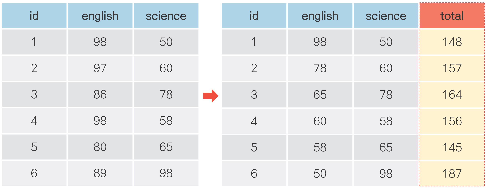
파생변수 추가하기
id nclass math english science total
0 1 1 50 98 50 198
1 2 1 60 97 60 217
2 3 1 45 86 78 209
3 4 1 30 98 58 186
4 5 2 25 80 65 170
5 6 2 50 89 98 237
6 7 2 80 90 45 215
7 8 2 90 78 25 193
8 9 3 20 98 15 133
9 10 3 50 98 45 193
10 11 3 65 65 65 195
11 12 3 45 85 32 162
12 13 4 46 98 65 209
13 14 4 48 87 12 147
14 15 4 75 56 78 209
15 16 4 58 98 65 221
16 17 5 65 68 98 231
17 18 5 80 78 90 248
18 19 5 89 68 87 244
19 20 5 78 83 58 219여러 파생변수 한 번에 추가하기
exam.assign(
total = exam['math'] + exam['english'] + exam['science'], # total 추가
mean = (exam['math'] + exam['english'] + exam['science']) / 3) # mean 추가 id nclass math english science total mean
0 1 1 50 98 50 198 66.000000
1 2 1 60 97 60 217 72.333333
2 3 1 45 86 78 209 69.666667
3 4 1 30 98 58 186 62.000000
4 5 2 25 80 65 170 56.666667
5 6 2 50 89 98 237 79.000000
6 7 2 80 90 45 215 71.666667
7 8 2 90 78 25 193 64.333333
8 9 3 20 98 15 133 44.333333
9 10 3 50 98 45 193 64.333333
10 11 3 65 65 65 195 65.000000
11 12 3 45 85 32 162 54.000000
12 13 4 46 98 65 209 69.666667
13 14 4 48 87 12 147 49.000000
14 15 4 75 56 78 209 69.666667
15 16 4 58 98 65 221 73.666667
16 17 5 65 68 98 231 77.000000
17 18 5 80 78 90 248 82.666667
18 19 5 89 68 87 244 81.333333
19 20 5 78 83 58 219 73.000000df.assign()에 np.where() 적용하기
id nclass math english science test
0 1 1 50 98 50 fall
1 2 1 60 97 60 pass
2 3 1 45 86 78 pass
3 4 1 30 98 58 fall
4 5 2 25 80 65 pass
5 6 2 50 89 98 pass
6 7 2 80 90 45 fall
7 8 2 90 78 25 fall
8 9 3 20 98 15 fall
9 10 3 50 98 45 fall
10 11 3 65 65 65 pass
11 12 3 45 85 32 fall
12 13 4 46 98 65 pass
13 14 4 48 87 12 fall
14 15 4 75 56 78 pass
15 16 4 58 98 65 pass
16 17 5 65 68 98 pass
17 18 5 80 78 90 pass
18 19 5 89 68 87 pass
19 20 5 78 83 58 fall추가한 변수를 pandas 함수에 바로 활용하기
# total 변수 추가, total 기준 정렬
exam.assign(total = exam['math'] + exam['english'] + exam['science']) \
.sort_values('total') id nclass math english science total
8 9 3 20 98 15 133
13 14 4 48 87 12 147
11 12 3 45 85 32 162
4 5 2 25 80 65 170
3 4 1 30 98 58 186
9 10 3 50 98 45 193
7 8 2 90 78 25 193
10 11 3 65 65 65 195
0 1 1 50 98 50 198
2 3 1 45 86 78 209
12 13 4 46 98 65 209
14 15 4 75 56 78 209
6 7 2 80 90 45 215
1 2 1 60 97 60 217
19 20 5 78 83 58 219
15 16 4 58 98 65 221
16 17 5 65 68 98 231
5 6 2 50 89 98 237
18 19 5 89 68 87 244
17 18 5 80 78 90 248lambda 이용해 데이터 프레임명 줄여 쓰기
앞에서 만든 변수를 활용해 다시 변수 만들기
반드시 lambda를 이용해 데이터 프레임명을 약어로 입력
- 앞의 코드는 데이터 프레임명을 서로 다른 문자로 입력하여 읽기 불편함
- 파생 변수를 만드는 행에
lambda를 각각 입력하면 데이터 프레임명 통일하여 가독성 높아짐
혼자서 해보기
mpg 데이터를 이용해 분석 문제를 해결해 보세요.
Q1. mpg 데이터 복사본을 만들고, cty와 hwy를 더한 ‘합산 연비 변수’ 를 추가하세요.
Q2. 앞에서 만든 ‘합산 연비 변수’ 를 2로 나눠 ‘평균 연비 변수’ 를 추가하세요.
Q3. ‘평균 연비 변수’ 가 가장 높은 자동차 3종의 데이터를 출력하세요.
Q4. 1~3번 문제를 해결할 수 있는 하나로 연결된 pandas 구문을 만들어 실행해 보세요.
데이터는 복사본 대신 mpg 원본을 이용하세요.
Q1. mpg 데이터 복사본을 만들고, cty와 hwy를 더한 ‘합산 연비 변수’ 를 추가하세요.
Q2. 앞에서 만든 ‘합산 연비 변수’ 를 2로 나눠 ‘평균 연비 변수’ 를 추가하세요.
Q3. ‘평균 연비 변수’ 가 가장 높은 자동차 3종의 데이터를 출력하세요.
manufacturer model displ year cyl ... hwy fl category total mean
221 volkswagen new beetle 1.9 1999 4 ... 44 d subcompact 79 39.5
212 volkswagen jetta 1.9 1999 4 ... 44 d compact 77 38.5
222 volkswagen new beetle 1.9 1999 4 ... 41 d subcompact 70 35.0Q4. 1~3번 문제를 해결할 수 있는 하나로 연결된 pandas 구문을 만들어 실행해 보세요.
데이터는 복사본 대신 mpg 원본을 이용하세요.
manufacturer model displ year cyl ... hwy fl category total mean
221 volkswagen new beetle 1.9 1999 4 ... 44 d subcompact 79 39.5
212 volkswagen jetta 1.9 1999 4 ... 44 d compact 77 38.5
222 volkswagen new beetle 1.9 1999 4 ... 41 d subcompact 70 35.006-6 집단별로 요약하기
집단별로 요약하기: df.groupby(), df.agg()
집단별로 요약하기
전체 요약 통계량 구하기
함수명 뒤에 () 넣지 않음
집단별로 요약하기
집단별 요약 통계량 구하기
mean_math
nclass
1 46.25
2 61.25
3 45.00
4 56.75
5 78.00변수를 인덱스로 바꾸지 않기
as_index = False: 변수를 인덱스로 바꾸지 않고 원래대로 유지- 앞 코드의 출력 결과에서 변수명
nclass가 인덱스(index)로 바뀌어mean_math보다 밑에 표시됨 groupby()의 기본값이 변수를 인덱스로 바꾸도록 설정되어 있기 때문- 인덱스(index): 값이 데이터 프레임의 어디에 있는지 ‘값의 위치를 나타낸 값’
- 앞 코드의 출력 결과에서 변수명
여러 요약 통계량 한 번에 구하기
mean_math sum_math median_math n
nclass
1 46.25 185 47.5 4
2 61.25 245 65.0 4
3 45.00 180 47.5 4
4 56.75 227 53.0 4
5 78.00 312 79.0 4agg()에 자주 사용하는 요약 통계량 함수
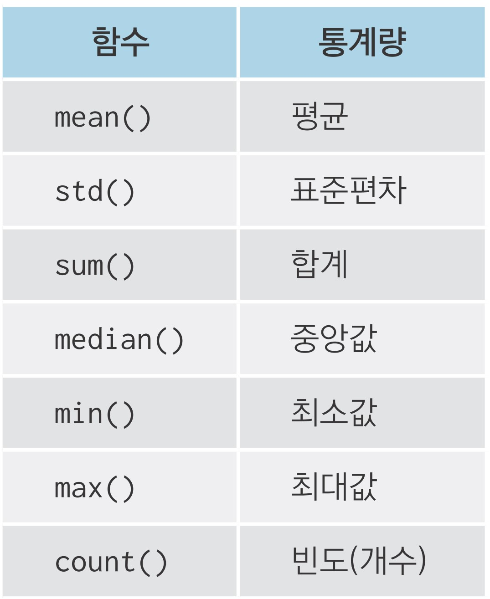
집단별로 다시 집단 나누기
집단을 나눈 다음 다시 하위 집단으로 나누기
mean_cty
manufacturer drv
audi 4 16.818182
f 18.857143
chevrolet 4 12.500000
f 18.800000
r 14.100000
dodge 4 12.000000
f 15.818182
ford 4 13.307692
r 14.750000
honda f 24.444444
hyundai f 18.642857
jeep 4 13.500000
land rover 4 11.500000
lincoln r 11.333333
mercury 4 13.250000
nissan 4 13.750000
f 20.000000
pontiac f 17.000000
subaru 4 19.285714
toyota 4 14.933333
f 21.368421
volkswagen f 20.925926 value_counts()로 집단별 빈도 간단하게 구하기
- 짧은 코드로 빈도를 구할 수 있음, 자동으로 빈도 기준 내림차순 정렬
- 출력 결과가 데이터 프레임이 아닌 시리즈(series) 자료 구조이므로
query()적용 불가
pandas 함수 조합하기
Q. 제조 회사별로 'suv' 자동차의 도시 및 고속도로 합산 연비 평균을 구해 내림차순으로 정렬하고,
1~5위까지 출력하기
함수 사용 절차
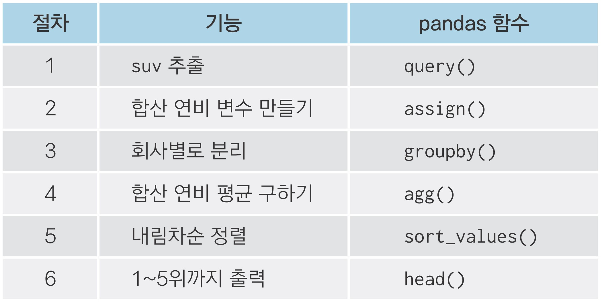
pandas 함수 조합하기
Q. 제조 회사별로 'suv' 자동차의 도시 및 고속도로 합산 연비 평균을 구해 내림차순으로 정렬하고,
1~5위까지 출력하기
mean_tot
manufacturer
subaru 21.916667
toyota 16.312500
nissan 15.875000
mercury 15.625000
jeep 15.562500혼자서 해보기
mpg 데이터를 이용해 분석 문제를 해결해 보세요.
Q1. mpg 데이터의 category는 자동차를 특징에 따라 'suv', 'compact' 등 일곱 종류로 분류한
변수입니다. 어떤 차종의 도시 연비가 높은지 비교해 보려고 합니다. category별 cty 평균을
구해 보세요.
Q2. 앞 문제의 출력 결과는 category 값 알파벳순으로 정렬되어 있습니다. 어떤 차종의 도시 연비가
높은지 쉽게 알아볼 수 있도록 cty 평균이 높은 순으로 정렬해 출력하세요.
Q3. 어떤 회사 자동차의 hwy(고속도로 연비)가 가장 높은지 알아보려고 합니다. hwy 평균이 가장
높은 회사 세 곳을 출력하세요.
Q4. 어떤 회사에서 'compact' 차종을 가장 많이 생산하는지 알아보려고 합니다. 회사별 'compact'
차종 수를 내림차순으로 정렬해 출력하세요.
Q1. mpg 데이터의 category는 자동차를 특징에 따라 'suv', 'compact' 등 일곱 종류로 분류한
변수입니다. 어떤 차종의 도시 연비가 높은지 비교해 보려고 합니다. category별 cty 평균을
구해 보세요.
mean_cty
category
2seater 15.400000
compact 20.127660
midsize 18.756098
minivan 15.818182
pickup 13.000000
subcompact 20.371429
suv 13.500000Q2. 앞 문제의 출력 결과는 category 값 알파벳순으로 정렬되어 있습니다. 어떤 차종의 도시 연비가
높은지 쉽게 알아볼 수 있도록 cty 평균이 높은 순으로 정렬해 출력하세요.
mean_cty
category
subcompact 20.371429
compact 20.127660
midsize 18.756098
minivan 15.818182
2seater 15.400000
suv 13.500000
pickup 13.000000Q3. 어떤 회사 자동차의 hwy(고속도로 연비)가 가장 높은지 알아보려고 합니다. hwy 평균이 가장
높은 회사 세 곳을 출력하세요.
mean_hwy
manufacturer
honda 32.555556
volkswagen 29.222222
hyundai 26.857143Q4. 어떤 회사에서 'compact' 차종을 가장 많이 생산하는지 알아보려고 합니다. 회사별 'compact'
차종 수를 내림차순으로 정렬해 출력하세요.
방법1
n
manufacturer
audi 15
volkswagen 14
toyota 12
subaru 4
nissan 2Q4. 어떤 회사에서 'compact' 차종을 가장 많이 생산하는지 알아보려고 합니다. 회사별 'compact'
차종 수를 내림차순으로 정렬해 출력하세요.
방법2
manufacturer
audi 15
volkswagen 14
toyota 12
subaru 4
nissan 2
Name: count, dtype: int6406-7 데이터 합치기
데이터 합치기
가로로 합치기: df.merge()
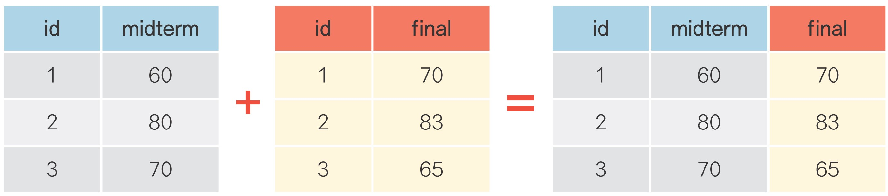
세로로 합치기: df.concat()
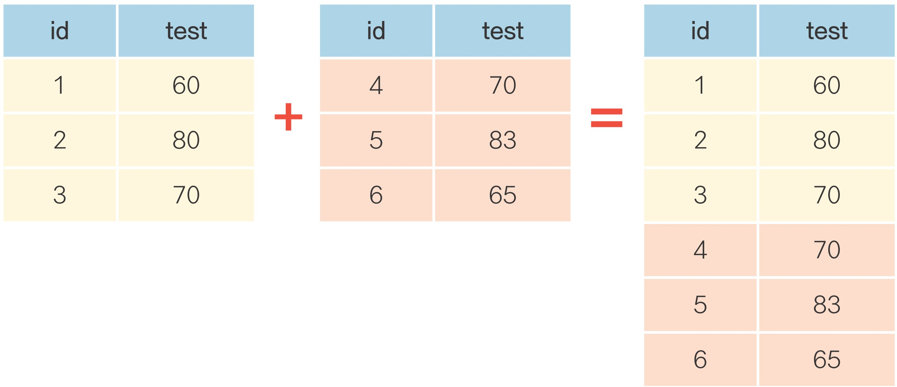
가로로 합치기
pd.merge()에 결합할 데이터 프레임명 나열how = 'left': 오른쪽에 입력한 데이터 프레임을 왼쪽 데이터 프레임에 결합on: 데이터를 합칠 때 기준으로 삼을 변수명 입력
다른 데이터를 활용해 변수 추가하기
다른 데이터를 활용해 변수 추가하기
# nclass 기준으로 합쳐서 exam_new에 할당
exam_new = pd.merge(exam, name, how = 'left', on = 'nclass')
exam_new id nclass math english science teacher
0 1 1 50 98 50 kim
1 2 1 60 97 60 kim
2 3 1 45 86 78 kim
3 4 1 30 98 58 kim
4 5 2 25 80 65 lee
5 6 2 50 89 98 lee
6 7 2 80 90 45 lee
7 8 2 90 78 25 lee
8 9 3 20 98 15 park
9 10 3 50 98 45 park
10 11 3 65 65 65 park
11 12 3 45 85 32 park
12 13 4 46 98 65 choi
13 14 4 48 87 12 choi
14 15 4 75 56 78 choi
15 16 4 58 98 65 choi
16 17 5 65 68 98 jung
17 18 5 80 78 90 jung
18 19 5 89 68 87 jung
19 20 5 78 83 58 jung세로로 합치기
결합할 데이터 프레임명을 []를 이용해 나열
id test
0 1 60
1 2 80
2 3 70
3 4 90
4 5 85
0 6 70
1 7 83
2 8 65
3 9 95
4 10 80 인덱스 중복 안되도록 새로 부여하려면 pd.concat()에 ignore_index = True
pandas 더 알아보기
치트 시트(cheat sheet): 패키지 사용법을 요약한 매뉴얼
• Pandas Cheat Sheet: bit.ly/easypy_pandas
pandas 공식 문서 검색하기
• pandas documentation: pandas.pydata.org/docs
혼자서 해보기
mpg 데이터를 이용해 분석 문제를 해결해 보세요.
mpg 데이터의 fl 변수는 자동차에 사용하는 연료(fuel)를 의미합니다. 다음은 자동차 연료별 가격을 나타낸 표입니다. 우선 이 정보를 이용해 연료와 가격으로 구성된 데이터 프레임을 만들어 보세요.
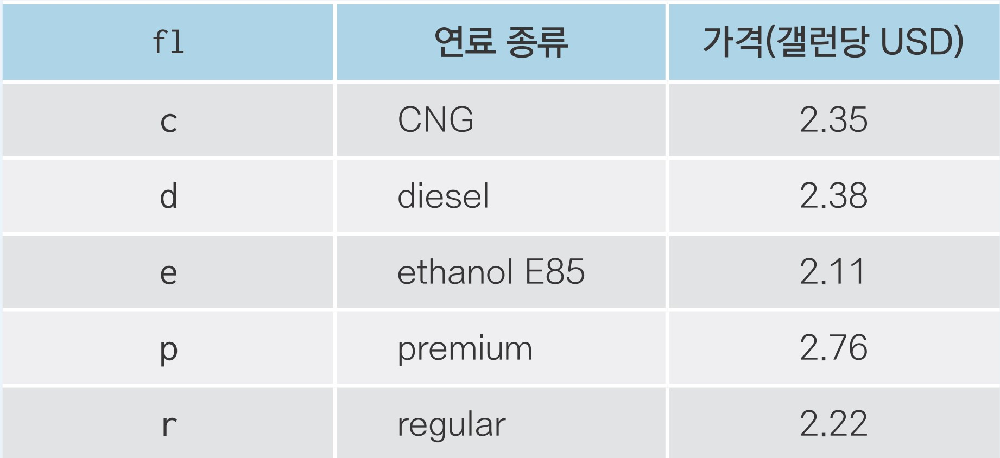
mpg 데이터를 이용해 분석 문제를 해결해 보세요.
Q1. mpg 데이터에는 연료 종류를 나타낸 fl 변수는 있지만 연료 가격을 나타낸 변수는 없습니다.
앞에서 만든 fuel 데이터를 이용해 mpg 데이터에 price_fl(연료 가격) 변수를 추가하세요.
Q2. 연료 가격 변수가 잘 추가됐는지 확인하기 위해 model, fl, price_fl 변수를 추출해 앞부분
5행을 출력해 보세요.
Q1. mpg 데이터에는 연료 종류를 나타낸 fl 변수는 있지만 연료 가격을 나타낸 변수는 없습니다.
앞에서 만든 fuel 데이터를 이용해 mpg 데이터에 price_fl(연료 가격) 변수를 추가하세요.
Q2. 연료 가격 변수가 잘 추가됐는지 확인하기 위해 model, fl, price_fl 변수를 추출해 앞부분
5행을 출력해 보세요.
정리하기
## 1. 조건에 맞는 데이터만 추출하기
exam.query('english <= 80')
exam.query('nclass == 1 & math >= 50') # 여러 조건 동시 충족
exam.query('math >= 90 | english >= 90') # 여러 조건 중 하나 이상 충족
exam.query('nclass in [1, 3, 5]')
## 2. 필요한 변수만 추출하기
exam['math'] # 한 변수 추출
exam[['nclass', 'math', 'english']] # 여러 변수 추출
exam.drop(columns = 'math') # 변수 제거
exam.drop(columns = ['math', 'english']) # 여러 변수 제거
## 3. pandas 명령어 조합하기
exam.query('math >= 50')[['id', 'math']].head()정리하기
정리하기
## 5. 파생변수 추가하기
exam.assign(total = exam['math'] + exam['english'] + exam['science'])
# 여러 파생변수 한 번에 추가하기
exam.assign(total = exam['math'] + exam['english'] + exam['science'],
mean = (exam['math'] + exam['english'] + exam['science']) / 3)
# assign()에 np.where() 적용하기
exam.assign(test = np.where(exam['science'] >= 60, 'pass', 'fall'))
# 추가한 변수를 pandas 코드에 바로 활용하기
exam.assign(total = exam['math'] + exam['english'] + exam['science']) \
.sort_values('total') \
.head()정리하기
분석 도전
분석 도전
미국 동북중부 437개 지역의 인구통계 정보를 담고 있는 midwest.csv를 사용해 데이터 분석 문제를 해결해 보세요.
문제 1. popadults는 해당 지역의 성인 인구, poptotal은 전체 인구를 나타냅니다.
midwest 데이터에 ‘전체 인구 대비 미성년 인구 백분율’ 변수를 추가하세요.
문제 2. 미성년 인구 백분율이 가장 높은 상위 5개 county(지역)의 미성년 인구 백분율을 출력하세요.
문제 3. 분류표의 기준에 따라 미성년 비율 등급 변수를 추가하고, 각 등급에 몇 개의 지역이 있는지
알아보세요.
문제 4. popasian은 해당 지역의 아시아인 인구를 나타냅니다. ‘전체 인구 대비 아시아인 인구 백분율’
변수를 추가하고 하위 10개 지역의 state(주), county(지역), 아시아인 인구 백분율을
출력하세요.
문제 1. popadults는 해당 지역의 성인 인구, poptotal은 전체 인구를 나타냅니다.
midwest 데이터에 ‘전체 인구 대비 미성년 인구 백분율’ 변수를 추가하세요.
문제 2. 미성년 인구 백분율이 가장 높은 상위 5개 county(지역)의 미성년 인구 백분율을 출력하세요.
county ratio
230 ISABELLA 51.501172
404 MENOMINEE 50.591260
281 ATHENS 49.320727
247 MECOSTA 49.059183
154 MONROE 47.358182문제 3. 분류표의 기준에 따라 미성년 비율 등급 변수를 추가하고, 각 등급에 몇 개의 지역이 있는지
알아보세요.
방법1
n
grade
large 32
middle 396
small 9문제 3. 분류표의 기준에 따라 미성년 비율 등급 변수를 추가하고, 각 등급에 몇 개의 지역이 있는지
알아보세요.
방법2
문제 4. popasian은 해당 지역의 아시아인 인구를 나타냅니다. ‘전체 인구 대비 아시아인 인구 백분율’
변수를 추가하고 하위 10개 지역의 state(주), county(지역), 아시아인 인구 백분율을
출력하세요.
state county ratio_asian
404 WI MENOMINEE 0.000000
105 IN BENTON 0.010592
109 IN CARROLL 0.015950
358 OH VINTON 0.027032
390 WI IRON 0.032504
85 IL SCOTT 0.053154
112 IN CLAY 0.060716
261 MI OSCODA 0.063759
340 OH PERRY 0.066546
73 IL PIATT 0.070749